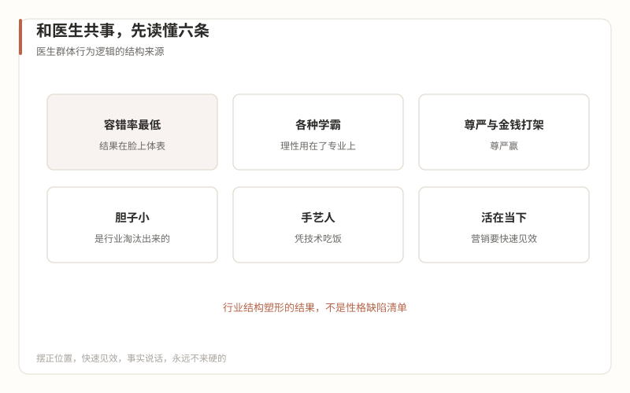

3会经历什么
和医生共事是一门手艺
本篇回答：与行业核心资源共事的行为逻辑。大厂人带得走的方法论在这里几乎全部失效，但失效的原因值得学——它揭示了这个行业最深层的一套运行规则。
一、他们不是难搞，是被这个行业塑形了
先看一组事实，全部出自行业老手写给经营者的文章（《整形医生的心思，经营院长要怎么猜？》，2019-04-16，以下未注明出处的引用均出自本文）：
关于压力："在所有医疗门类里，医美项目的容错率是最低的"——结果"不是在脸上，就是在体表"，患者"大多是健康人，对治疗的期望值比疾病医疗高的多，这些患者或消费者不能接受不满意的结果"。医美医生"承担着外人无法理解的精神压力"。
关于脾气："当人承受心理压力的时候，对专业之外的其他事情，会变得敏感或易怒。"
关于出身："大部分学医的，都曾经是各种层级的学霸，他们智商很高，而且读书的时间比一般人都长，念书和行医用掉了他们大部分理性，故而看上去情商不如智商那么高。"
关于胆量："从事医疗美容的医生，胆子小，因为胆子大的医生做不了医美"——胆大包天的医生更容易出医患纠纷，被这个行业自然淘汰；留下来的，"只能战战兢兢、如履薄冰"。
关于排序："在医生的内心世界里，尊严和金钱常常在打架……总体来说他们对尊严的保护多过对金钱的追求。"
关于时间观："在消费医疗领域，医生们凭借自己的技术吃饭，不能要求他们具有多少'长远眼光'，他们十分看重眼前，活在当下。"
把这六条放在一起，一个画像就出来了：一群高智商、长学制、被最低容错率行业筛选得胆小谨慎的手艺人，尊严敏感、看重当下、对专业之外的事易怒。这不是性格缺陷清单，是这个职业的结构性产物。
大厂人的常见误读恰恰是从性格入手："这个医生太自负了""那个医生情商低"。性格归因会让你试图绕开这个人，结构归因会让你理解这套规则然后在其内工作。前者死法见第 08 篇，后者是本篇的正文。

二、合作方法清单
五条方法，每条都有出处，没有一条是普世情商。
第一条：摆正位置——你是来服务的，不是来管理的。 这不是姿态，是结构（第 04 篇）。原话有多直接，引用就有多直接："不要指望你能管理医生，就算你是投资人的小舅子，医生也不会真心听你的"（《什么人能当医美机构的经营院长？（一）》，2018-10-26）。而且装是装不出来的："除非你是发自内心的尊重，否则你的戏，医生们一眼便可以看穿，只是他们不一定说出来。"（2019-04-16）
第二条：长短兼顾——营销要快速见效，长线建设并行。 "只会谈长远规划是干不长的，医生们要求你的营销很快就能见到效果，远期的市场建设固然重要，眼前的业务也必须能够见到成效。"你的年度品牌规划再漂亮，如果这个月不能让医生的排班表满起来，你在医生那里的信用就是零。活法二（第 08 篇）的落地版本：先用一个快速见效的小胜拿到入场券，再谈你想做的长线。
第三条：意见相左时，永远不来硬的。 原文给了一个场景：大部分整形医生什么项目都会做，你想让他聚焦最擅长的项目、放弃不擅长的术式——直接要求等于让他"放弃大部分平生所学"，几乎不可能同意。可行的方式是"软磨硬泡"："讲大道理似乎也没什么用……用事实说话，再加上善意引导，说不定能扭转乾坤。"大厂对照：你在旧世界靠数据和职级推动决策，在这里靠事实、耐心和让医生自己得出结论。慢，但这是唯一被验证的路径。
第四条：管好医生不管的事，结果不许出错。 "财务、税务、医政、法律、采购、库存等等一系列行政事物，往往是医生们不擅长、甚至不关心的"——"处理的过程他们并不关心，但是结果不允许出错。"（2018-10-26）这是你价值的根据地：把医生从琐事里捞出来，让他愉快地做手艺。"只有愉快的医生，才可能有愉快的患者。"（同文）
第五条：做医生的安全感来源。 容错率最低的行业里，"美容医生更需要被保护，经营院长一定要能够给医生带来安全感"（2019-04-16）。具体到动作：纠纷出现时你先顶上去处理流程，而不是把医生推到患者面前；宣传物料风险你先审一遍；排期冲突你去协调。安全感是这个行业里最硬的通货。
三、底线条款：把这句话原样抄进你的心理合同
上面都是合作方法，这一条是冲突预案。以下原话，来自那位做了二十多年的投资人的文章：
"一旦与股东医生发生冲突，牺牲的只能是非医疗人员，包括经营院长自己，没办法，医生属于稀缺资源。"（《什么人能当医美机构的经营院长？（一）》，2018-10-26）
注意这句话的口气——"没办法"。这不是抱怨，是过来人对结构事实的陈述。它的含义值得拆开：
- 冲突不是如果，是何时：你和医生在营销口径、项目重点、客户处理上必然有分歧；
- 冲突的裁决不看你占不占理，看结构：医生是稀缺资源，你不是；
- 所以冲突管理的目标不是赢，是"双方都舒服"——原文说的"共同探索一条大家都'舒服'的相处模式"，是这门手艺的及格线。
翻译器时间。直译：医生 ≈ 大厂的关键技术负责人/核心KOL，靠专业权威和不可替代性获得事实上的否决权。失真处：大厂的关键人才被期权、职级和晋升体系绑定，组织换人组织还在；医生被稀缺性绑定的是机构，不是你，而且他自带客源——"医生的自带流量……含金量最高"（2018-10-26），流量跟人走。大厂人的典型错误：把和医生的分歧带上会议桌、摆上数据、寻求"公正裁决"——你要求的裁决机制不存在，而你发起裁决这个动作本身，就已经是判决结果了。
四、一个必须交代的边界
本篇全部叙述出自一侧视角：经营者、投资人的视角——语料作者是站在"怎么跟医生打交道"那一边写的。医生自己怎么描述这段关系、他们眼里的经营者是什么样，语料里没有系统材料，这是本系列的素材缺口（第 13 篇的采访计划里应补上医生自述）。
在拿到另一侧叙述之前，本篇的方法清单请按"一侧经验"使用：它们大概率能帮你少踩坑，但不要据此以为你已懂了医生。医美行业的"懂"，从来都是双向的。
键盘 ← → 可翻篇，手机屏幕左右边缘滑动同样有效